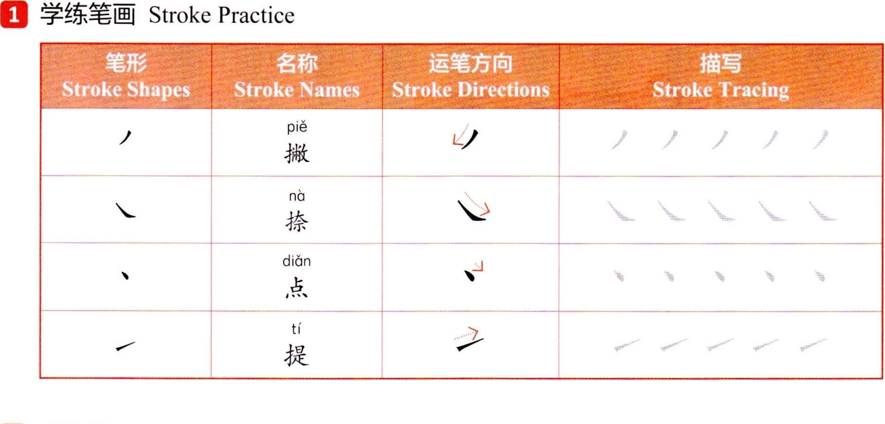
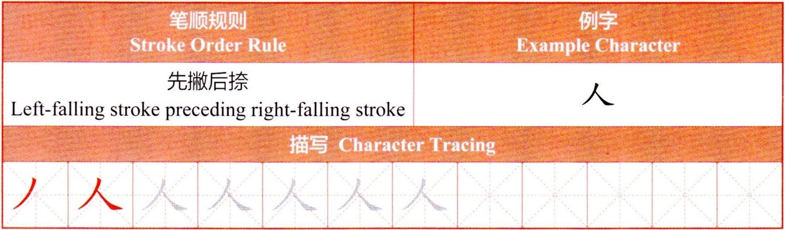
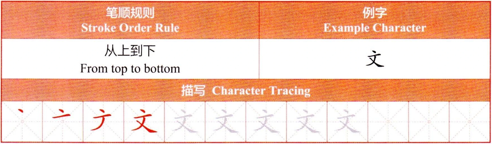

二
汉字Chinese CharactersИероглифы
汉字书写（二）Chinese Character Writing (II)Написание иероглифов (II)
1学练笔画Stroke PracticeПрактика написания черт

2学练笔顺Stroke Order PracticeПрактика порядка черт


汉字书写（二）Chinese Character Writing (II)Написание иероглифов (II)
1学练笔画Stroke PracticeПрактика написания черт

2学练笔顺Stroke Order PracticeПрактика порядка черт

